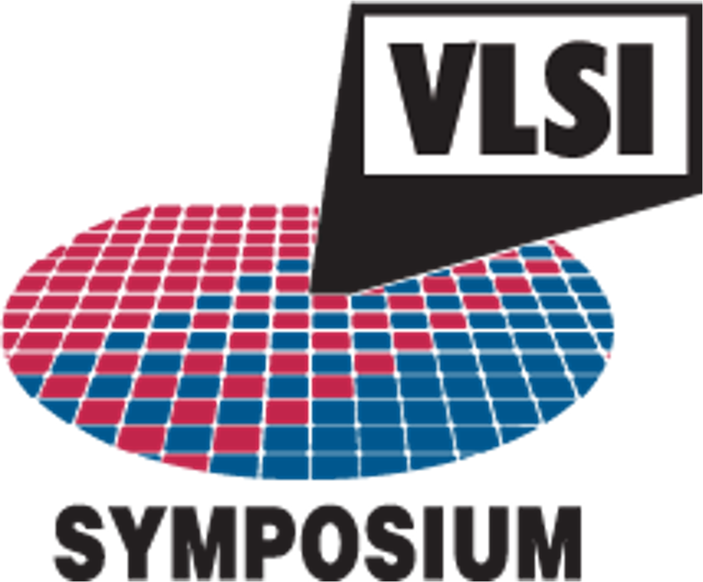

<!DOCTYPE html>
<html>
<head>
    
    <meta http-equiv="content-type" content="text/html; charset=UTF-8" />
    
        <script>
            L_NO_TOUCH = false;
            L_DISABLE_3D = false;
        </script>
    
    <style>html, body {width: 100%;height: 100%;margin: 0;padding: 0;}</style>
    <style>#map {position:absolute;top:0;bottom:0;right:0;left:0;}</style>
    <script src="https://cdn.jsdelivr.net/npm/leaflet@1.9.3/dist/leaflet.js"></script>
    <script src="https://code.jquery.com/jquery-3.7.1.min.js"></script>
    <script src="https://cdn.jsdelivr.net/npm/bootstrap@5.2.2/dist/js/bootstrap.bundle.min.js"></script>
    <script src="https://cdnjs.cloudflare.com/ajax/libs/Leaflet.awesome-markers/2.0.2/leaflet.awesome-markers.js"></script>
    <link rel="stylesheet" href="https://cdn.jsdelivr.net/npm/leaflet@1.9.3/dist/leaflet.css"/>
    <link rel="stylesheet" href="https://cdn.jsdelivr.net/npm/bootstrap@5.2.2/dist/css/bootstrap.min.css"/>
    <link rel="stylesheet" href="https://netdna.bootstrapcdn.com/bootstrap/3.0.0/css/bootstrap-glyphicons.css"/>
    <link rel="stylesheet" href="https://cdn.jsdelivr.net/npm/@fortawesome/fontawesome-free@6.2.0/css/all.min.css"/>
    <link rel="stylesheet" href="https://cdnjs.cloudflare.com/ajax/libs/Leaflet.awesome-markers/2.0.2/leaflet.awesome-markers.css"/>
    <link rel="stylesheet" href="https://cdn.jsdelivr.net/gh/python-visualization/folium/folium/templates/leaflet.awesome.rotate.min.css"/>
    
            <meta name="viewport" content="width=device-width,
                initial-scale=1.0, maximum-scale=1.0, user-scalable=no" />
            <style>
                #map_3f5210f2900e38cf33b3fcd401189b29 {
                    position: relative;
                    width: 100.0%;
                    height: 100.0%;
                    left: 0.0%;
                    top: 0.0%;
                }
                .leaflet-container { font-size: 1rem; }
            </style>
        
    <script src="https://unpkg.com/leaflet-control-geocoder/dist/Control.Geocoder.js"></script>
    <link rel="stylesheet" href="https://unpkg.com/leaflet-control-geocoder/dist/Control.Geocoder.css"/>
    <script src="https://cdn.jsdelivr.net/npm/leaflet.fullscreen@3.0.0/Control.FullScreen.min.js"></script>
    <link rel="stylesheet" href="https://cdn.jsdelivr.net/npm/leaflet.fullscreen@3.0.0/Control.FullScreen.css"/>
<link rel="stylesheet" type="text/css" href="./emoji.css"></head>
<body>
    
    <style>.leaflet-container { height: 100% !important; }</style>
    
            <div class="folium-map" id="map_3f5210f2900e38cf33b3fcd401189b29" ></div>
        
</body>
<script>
    
    
            var map_3f5210f2900e38cf33b3fcd401189b29 = L.map(
                "map_3f5210f2900e38cf33b3fcd401189b29",
                {
                    center: [40.0, 10.0],
                    crs: L.CRS.EPSG3857,
                    zoom: 2,
                    zoomControl: true,
                    preferCanvas: true,
                    lang: "en",
                }
            );

            

        
    
            var tile_layer_4e7d52cc2d408820e63efdb9c69ec6b9 = L.tileLayer(
                "https://{s}.basemaps.cartocdn.com/light_all/{z}/{x}/{y}{r}.png",
                {"attribution": "\u0026copy; \u003ca href=\"https://www.openstreetmap.org/copyright\"\u003eOpenStreetMap\u003c/a\u003e contributors \u0026copy; \u003ca href=\"https://carto.com/attributions\"\u003eCARTO\u003c/a\u003e", "detectRetina": false, "maxNativeZoom": 20, "maxZoom": 20, "minZoom": 0, "noWrap": false, "opacity": 1, "subdomains": "abcd", "tms": false}
            );
        
    
            tile_layer_4e7d52cc2d408820e63efdb9c69ec6b9.addTo(map_3f5210f2900e38cf33b3fcd401189b29);
        
    
            var marker_d5d1ecd8cf0b583ba3663eb8d4d526ba = L.marker(
                [37.785426, -122.404493],
                {}
            ).addTo(map_3f5210f2900e38cf33b3fcd401189b29);
        
    
            var icon_9c266a3dd8c40be215071c2b14764486 = L.AwesomeMarkers.icon(
                {"extraClasses": "fa-rotate-0", "icon": "fa-user", "iconColor": "white", "markerColor": "gray", "prefix": "fa"}
            );
            marker_d5d1ecd8cf0b583ba3663eb8d4d526ba.setIcon(icon_9c266a3dd8c40be215071c2b14764486);
        
    
        var popup_35ca21482e59fbe8da6559015d992822 = L.popup({"maxWidth": "100%"});

        
            
                var html_d555cfc6b5242e73d8e683e4457ed60c = $(`<div id="html_d555cfc6b5242e73d8e683e4457ed60c" style="width: 100.0%; height: 100.0%;"><a href="https://www.isscc.org" target="_blank"></a></div>`)[0];
                popup_35ca21482e59fbe8da6559015d992822.setContent(html_d555cfc6b5242e73d8e683e4457ed60c);
            
        

        marker_d5d1ecd8cf0b583ba3663eb8d4d526ba.bindPopup(popup_35ca21482e59fbe8da6559015d992822)
        ;

        
    
    
            marker_d5d1ecd8cf0b583ba3663eb8d4d526ba.bindTooltip(
                `<div>
                     <div style="display: flex; align-items: center; height: 100%;"><div style="text-align: left; font-family: Trebuchet MS; font-size: 1.5em;"><b>IEEE ISSCC 2025</b><br>San Francisco<br>United States <span class="emoji">🇺🇸</span></div></div>
                 </div>`,
                {"sticky": true}
            );
        
    
            var marker_6baa0863a4a6f5e042a6aacc0652acdb = L.marker(
                [42.359208, -71.027212],
                {}
            ).addTo(map_3f5210f2900e38cf33b3fcd401189b29);
        
    
            var icon_a14ef3c1f3b1d0c26d67dc75145901ae = L.AwesomeMarkers.icon(
                {"extraClasses": "fa-rotate-0", "icon": "fa-user", "iconColor": "white", "markerColor": "gray", "prefix": "fa"}
            );
            marker_6baa0863a4a6f5e042a6aacc0652acdb.setIcon(icon_a14ef3c1f3b1d0c26d67dc75145901ae);
        
    
        var popup_0c7e5334f31707a60da0dbd7513f8ef8 = L.popup({"maxWidth": "100%"});

        
            
                var html_1e2465176978642e41d649627b55843a = $(`<div id="html_1e2465176978642e41d649627b55843a" style="width: 100.0%; height: 100.0%;"><a href="https://www.ieee-cicc.org" target="_blank"></a></div>`)[0];
                popup_0c7e5334f31707a60da0dbd7513f8ef8.setContent(html_1e2465176978642e41d649627b55843a);
            
        

        marker_6baa0863a4a6f5e042a6aacc0652acdb.bindPopup(popup_0c7e5334f31707a60da0dbd7513f8ef8)
        ;

        
    
    
            marker_6baa0863a4a6f5e042a6aacc0652acdb.bindTooltip(
                `<div>
                     <div style="display: flex; align-items: center; height: 100%;"><div style="text-align: left; font-family: Trebuchet MS; font-size: 1.5em;"><b>IEEE CICC 2025</b><br>Boston<br>United States <span class="emoji">🇺🇸</span></div></div>
                 </div>`,
                {"sticky": true}
            );
        
    
            var marker_ee644d6036ec6700e7c219f6cee3d2e8 = L.marker(
                [34.986206, 135.752487],
                {}
            ).addTo(map_3f5210f2900e38cf33b3fcd401189b29);
        
    
            var icon_ec768a0f02db764b1230071e71de8ed4 = L.AwesomeMarkers.icon(
                {"extraClasses": "fa-rotate-0", "icon": "fa-user", "iconColor": "white", "markerColor": "gray", "prefix": "fa"}
            );
            marker_ee644d6036ec6700e7c219f6cee3d2e8.setIcon(icon_ec768a0f02db764b1230071e71de8ed4);
        
    
        var popup_c77f72a0ea8bb780cbddbbb33fe1adba = L.popup({"maxWidth": "100%"});

        
            
                var html_6a33ffebaace79cdf753bfe554ab923b = $(`<div id="html_6a33ffebaace79cdf753bfe554ab923b" style="width: 100.0%; height: 100.0%;"><a href="https://www.vlsisymposium.org" target="_blank"></a></div>`)[0];
                popup_c77f72a0ea8bb780cbddbbb33fe1adba.setContent(html_6a33ffebaace79cdf753bfe554ab923b);
            
        

        marker_ee644d6036ec6700e7c219f6cee3d2e8.bindPopup(popup_c77f72a0ea8bb780cbddbbb33fe1adba)
        ;

        
    
    
            marker_ee644d6036ec6700e7c219f6cee3d2e8.bindTooltip(
                `<div>
                     <div style="display: flex; align-items: center; height: 100%;"><div style="text-align: left; font-family: Trebuchet MS; font-size: 1.5em;"><b>IEEE VLSI Symposium 2025</b><br>Kyoto<br>Japan <span class="emoji">🇯🇵</span></div></div>
                 </div>`,
                {"sticky": true}
            );
        
    
            var marker_45dcffcb9d286e5067b3cde0f2c13c29 = L.marker(
                [48.149555, 11.567753],
                {}
            ).addTo(map_3f5210f2900e38cf33b3fcd401189b29);
        
    
            var icon_75b22a16b48eaf2d904a8ef21331c152 = L.AwesomeMarkers.icon(
                {"extraClasses": "fa-rotate-0", "icon": "fa-user", "iconColor": "white", "markerColor": "gray", "prefix": "fa"}
            );
            marker_45dcffcb9d286e5067b3cde0f2c13c29.setIcon(icon_75b22a16b48eaf2d904a8ef21331c152);
        
    
        var popup_9036d7019f30e37737bc6ac785a475e0 = L.popup({"maxWidth": "100%"});

        
            
                var html_6e0c78f31cf03645abee9ac64ad1b70e = $(`<div id="html_6e0c78f31cf03645abee9ac64ad1b70e" style="width: 100.0%; height: 100.0%;"><a href="https://www.esserc2025.org" target="_blank"></a></div>`)[0];
                popup_9036d7019f30e37737bc6ac785a475e0.setContent(html_6e0c78f31cf03645abee9ac64ad1b70e);
            
        

        marker_45dcffcb9d286e5067b3cde0f2c13c29.bindPopup(popup_9036d7019f30e37737bc6ac785a475e0)
        ;

        
    
    
            marker_45dcffcb9d286e5067b3cde0f2c13c29.bindTooltip(
                `<div>
                     <div style="display: flex; align-items: center; height: 100%;"><div style="text-align: left; font-family: Trebuchet MS; font-size: 1.5em;"><b>IEEE ESSERC 2025</b><br>Munich<br>Germany <span class="emoji">🇩🇪</span></div></div>
                 </div>`,
                {"sticky": true}
            );
        
    
            var marker_021255002f19d93c39b6a43690d5858a = L.marker(
                [36.37496, 127.391453],
                {}
            ).addTo(map_3f5210f2900e38cf33b3fcd401189b29);
        
    
            var icon_9745e0bb201fe999d4fa5daa77554253 = L.AwesomeMarkers.icon(
                {"extraClasses": "fa-rotate-0", "icon": "fa-user", "iconColor": "white", "markerColor": "gray", "prefix": "fa"}
            );
            marker_021255002f19d93c39b6a43690d5858a.setIcon(icon_9745e0bb201fe999d4fa5daa77554253);
        
    
        var popup_b43e6a8d46bcffc945efc2e9ef9c0f62 = L.popup({"maxWidth": "100%"});

        
            
                var html_e3c74ca45442be6b8a935a4965cfd179 = $(`<div id="html_e3c74ca45442be6b8a935a4965cfd179" style="width: 100.0%; height: 100.0%;"><a href="https://a-sscc2025.org" target="_blank"></a></div>`)[0];
                popup_b43e6a8d46bcffc945efc2e9ef9c0f62.setContent(html_e3c74ca45442be6b8a935a4965cfd179);
            
        

        marker_021255002f19d93c39b6a43690d5858a.bindPopup(popup_b43e6a8d46bcffc945efc2e9ef9c0f62)
        ;

        
    
    
            marker_021255002f19d93c39b6a43690d5858a.bindTooltip(
                `<div>
                     <div style="display: flex; align-items: center; height: 100%;"><div style="text-align: left; font-family: Trebuchet MS; font-size: 1.5em;"><b>IEEE A-SSCC 2025</b><br>Daejeon<br>South Korea <span class="emoji">🇰🇷</span></div></div>
                 </div>`,
                {"sticky": true}
            );
        
    

            var geocoderOpts_geocoder_9c259e7d081cf08b83881931d475a6eb = {"collapsed": false, "defaultMarkGeocode": true, "position": "topright", "provider": "nominatim", "providerOptions": {}, "zoom": 11};

            // note: geocoder name should start with lowercase
            var geocoderName_geocoder_9c259e7d081cf08b83881931d475a6eb = geocoderOpts_geocoder_9c259e7d081cf08b83881931d475a6eb["provider"];

            var customGeocoder_geocoder_9c259e7d081cf08b83881931d475a6eb = L.Control.Geocoder[ geocoderName_geocoder_9c259e7d081cf08b83881931d475a6eb ](
                geocoderOpts_geocoder_9c259e7d081cf08b83881931d475a6eb['providerOptions']
            );
            geocoderOpts_geocoder_9c259e7d081cf08b83881931d475a6eb["geocoder"] = customGeocoder_geocoder_9c259e7d081cf08b83881931d475a6eb;

            L.Control.geocoder(
                geocoderOpts_geocoder_9c259e7d081cf08b83881931d475a6eb
            ).on('markgeocode', function(e) {
                var zoom = geocoderOpts_geocoder_9c259e7d081cf08b83881931d475a6eb['zoom'] || map_3f5210f2900e38cf33b3fcd401189b29.getZoom();
                map_3f5210f2900e38cf33b3fcd401189b29.setView(e.geocode.center, zoom);
            }).addTo(map_3f5210f2900e38cf33b3fcd401189b29);

        
    
            L.control.fullscreen(
                {"forceSeparateButton": true, "position": "topright", "title": "Expand me", "titleCancel": "Exit me"}
            ).addTo(map_3f5210f2900e38cf33b3fcd401189b29);
        
</script>
</html>